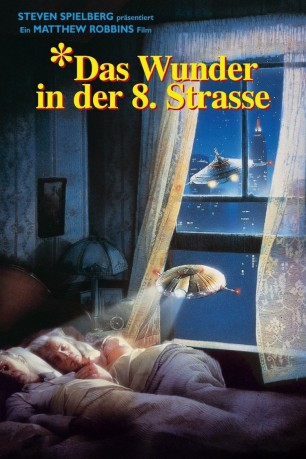
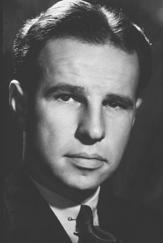
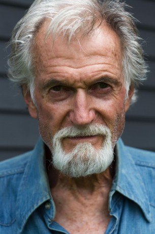
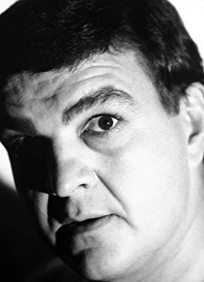

#5351 Das Wunder in der 8. Straße
Alternativ: *batteries not included
 
 IMDB-Wertung: 6.5 / 10
IMDB-Wertung: 6.5 / 10  Metascore: 0
Metascore: 0 
Nur ein Wunder kann den letzten 5 Mietern eines alten Hauses in Manhattan helfen. Ringsum ist die Hölle, ein Haus nach dem anderen wird rücksichtslos dem Erdboden gleichgemacht, denn ein skrupelloser Baulöwe plant ein neues Geschäftsviertel. Faye und Frank, die in dem Haus seit Jahrzehnten eine Imbißstube betreiben, sind ratlos. Doch eines Nachts geschieht das Wunder! Zwei fliegende Untertassen, kaum größer als eine Handfläche, verbünden sich mit den Hausbewohnern und greifen in das Geschehen ein. Nun werden die Karten neu gemischt, mit außerirdischen Kräften und Tricks sorgen die kleinen Fremdlinge für allerlei Verwirrung und Chaos...
Jahr: 1987
Dauer: 102 Minuten
FSK: 6
Land: USA Studio: Universal PicturesTonspuren: DD2.0 - ,
Untertitel: Deutsch, Englisch,
Auflösung: 1080p (1920x1040) Größe: 10444 MB
Genre: Sci-Fi, Komödie, Fantasy, Familie
Regisseur: Matthew Robbins
Drehbuch: Matt Corman
Soundtrack:
Darsteller:
-  Hume Cronyn als Frank Riley
 Jessica Tandy als Faye Riley
Jessica Tandy als Faye Riley Frank McRae als Harry Noble
Frank McRae als Harry Noble Elizabeth Peña als Marisa Esteval
Elizabeth Peña als Marisa Esteval- Dennis Boutsikaris als Mason Baylor
- Tom Aldredge als Sid Hogenson
- John Pankow als Kovacs
-  Michael Greene als Lacey
- Doris Belack als Mrs. Thompson
- Wendy Schaal als Pamela
- James Le Gros als Goon #2
- Shelly Kurtz als Policeman at Hospital
- Judy Grafe als Reporter #2
- Alice Beardsley als Nurse
 Luis Guzmán als Bystander , uncredited
Luis Guzmán als Bystander , uncredited- Michael Carmine als Carlos
- Jane Hoffman als Muriel Hogenson
-  John DiSanti als Gus
- MacIntyre Dixon als DeWitt
- José Angel Santana als Goon #1
- Ronald L. Schwary als Louie
- Susan Shoffner als Receptionist
- Joe Hamer als Policeman at Building
- H. Clay Dear als Policeman #2 at Building
- Howard Renensland als Reporter #1
- Dick Martinsen als Fireman
- Charles Raymond als Hector, Father of Marisa's child
- Riki Colon als Band Member #1
- Jon Imparato als Band Member #2
- David Vasquez als Band Member #3
- John Arceri als Chauffeur
- Lorenzo Gaspar als Construction Worker , uncredited
Datei: X:\1987\Wunder in der 8. Straße, Das (1987, FSK6, 1920x1040).mkv seit 17.01.2017
Festplatte: HD 1987-1991
 Es gibt insgesamt 50 Filme in der Gruppe '1987'
Es gibt insgesamt 50 Filme in der Gruppe '1987'